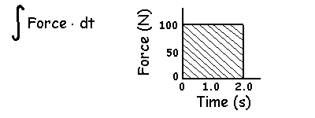
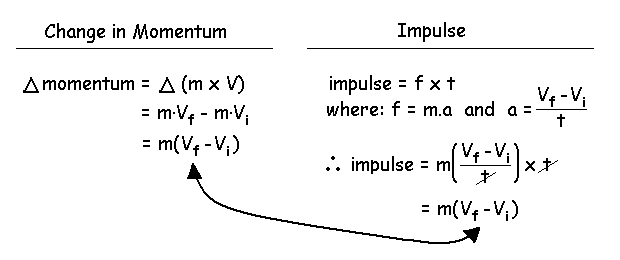
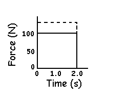
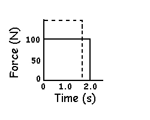
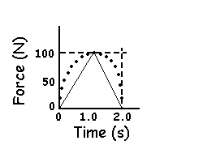

Impulse-Momentum Approach
The second method used to solve kinetics problems is the impulse-momentum approach. This approach is particularly useful when the force acts over a period time.
Impulse can be defined as the product of force and time.
Impulse = Force x time
Units are Newton seconds (N.s)
Example: If you apply a 100 N force to an object for 2 seconds, you have applied a 200 N.s impulse.
Impulse can also be defined as the integral of force with respect to time.

Recall from calculus that the integral is the same as the area.
Impulse can also be defined as a change in momentum.
Linear momentum is the product of mass and velocity and has the units of kilogram meters per second (kg.m/s). In order to have a lot of momentum, an object needs to have both a considerable amount of mass and velocity. A statue may have a lot of mass but since it is stationary, it has no momentum. Similarly, a golf ball may have considerable velocity but since it does not have much mass, does not have a lot of momentum. A speeding locomotive has both mass and velocity but requires a lot of impulse in order to gain the velocity which means that a considerable amount of force needs to be applied over a long time in order to achieve the neceassary increase in velocity and momentum. A negative impulse causes a negative change in momentum or a decrease in velocity. In the case of the locomotive, the brakes apply a negative force but they must be applied over a considerable time in order to generate a sufficient negative impulse to change the momentum back to zero and stop the train.
The figure below shows that impulse is indeed the same as a change in momentum.

Impulse is an important variable in biomechanics because in most human motion studies, mass is constant and therefore, impulse reflects a change in velocity.

This graph shows the horizontal force acting on a shot putter. The positive forces create a positive area under the force-time curve and indicates a positive impulse. Th positive impulse indicates a positive change or increase in momentum. From A to C, the athlete gains velocity as he travels across the circle. From C to D, the force are negative creating a negative area and causing a negative change in mometum. This causes the athlete to slow down and prevents him from stepping out of the circle at release.
(Thanks to Prof. James Hay for this graph)
Factors that Increase Impulse:
In many sporting activities, the object is to achieve the greatest final velocity possible and, therefore, to generate the greatest impulse. These activities include the explosive or ballistic motions of jumping or throwing. In order to increase impulse, one or both of force and time must be increased.
1) Increase average force over the time of force application (increase strength).

Weight training is the typical method of increasing the ability to generate force.
2) Increase time over which the force is applied (increase range of motion).

Maximizing the range of motion by using a full back swing is a simple method of increasing the time over which the force is applied.
Most textbooks of biomechanics only mention these two methods, however, a characteristic of good performers is generally a decrease in the time of force application. While this may seem to be a contradiction, the rcovery stored elastic energy in muscle requires a very short period of force application. Good athletes are able to utilize this energy to generate a greater increase in force than a decrease in time and thus a net increase in impulse.
3) Increase impulse with a decrease in time (utilization of stored elastic energy).

Rebound movements like the counter movement in the vertical jump is a common method to increase force even though the time of force application is decreased.
The pattern of force application is also a very important consideration with ballistic movements.
4) Increase impulse with the pattern of force application.
The area under the dotted line pattern is greater than the straight line pattern. Even though the maximum force and time are the same, the impulse is greater for the dotted pattern. This has implications for motor learning because the issue is not how much force you can generate but how you apply that force.